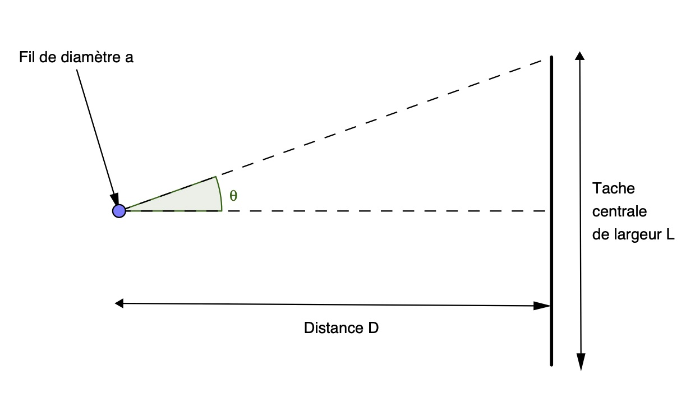
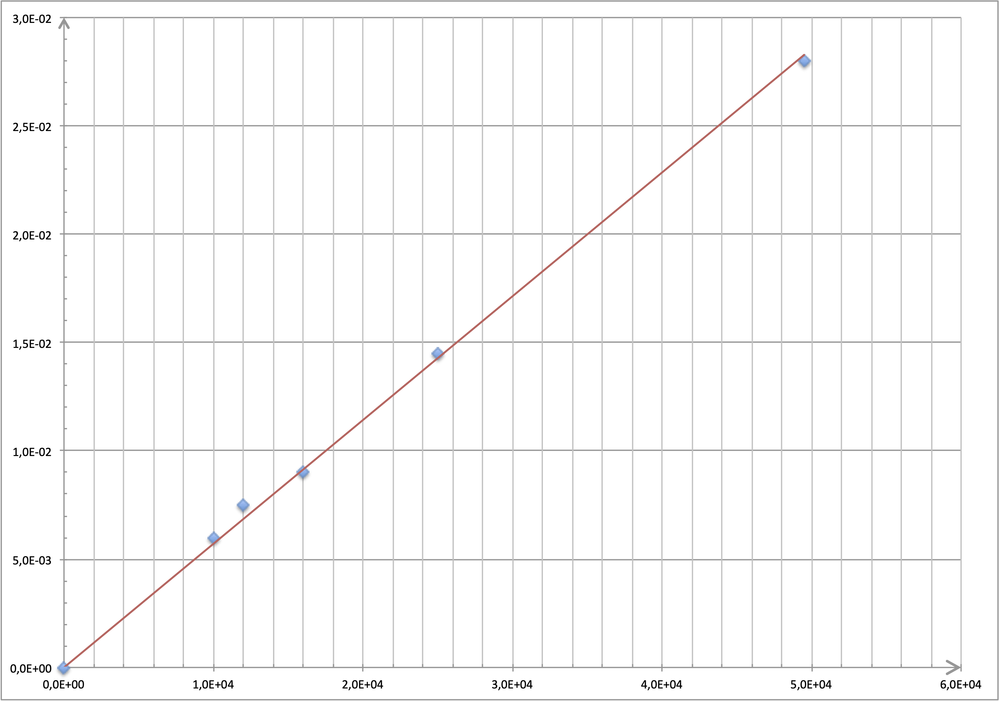

Le texte ci-dessous retrace succinctement l’évolution de quelques idées à propos de la nature de la lumière. Extraits d’articles parus dans l’ouvrage « Physique et Physiciens » et dans des revues « Sciences et vie ».
Huyghens (1629-1695) donne à la lumière un caractère ondulatoire par analogie à la propagation des ondes à la surface de l’eau et à la propagation du son.
Pour Huyghens, le caractère ondulatoire de la lumière est fondé sur les faits suivants :
- « le son ne se propage pas dans une enceinte vide d’air tandis que la lumière se propage dans cette même enceinte. La lumière consiste dans un mouvement de la matière qui se trouve entre nous et le corps lumineux, matière qu’il nomme éther » ;
- « la lumière s’étend de toutes parts1 et, quand elle vient de différents endroits, même de tout opposés2, les ondes lumineuses se traversent l’une l’autre sans s’empêcher3 » ;
- « la propagation de la lumière depuis un objet lumineux ne saurait être4 par le transport d’une matière qui depuis cet objet s’en vient jusqu’à nous ainsi qu’une balle ou une flèche traverse l’air ».
Fresnel (1788-1827) s’attaque au problème des ombres et de la propagation rectiligne de la lumière. Avec des moyens rudimentaires, il découvre et exploite le phénomène de diffraction. Il perce un petit trou dans une plaque de cuivre. Grâce à une lentille constituée par une goutte de miel déposée sur le trou, il concentre les rayons solaires sur un fil de fer.
Exploitation du document
- Quelle erreur commet Huyghens en comparant la propagation de la lumière à celle des ondes mécaniques ?
Réponse
Huyghens pense que la lumière est une onde mécanique, c’est à dire la propagation d’une perturbation de proche en proche sans transport de matière. Le milieu perturbé est l’éther, une substance spéciale et invisible qui remplirait l’Univers.
La théorie de la relativité d’Einstein a éliminé la possibilité d’existence de l’éther en tant milieu matériel.
- Citer deux propriétés générales des ondes qu’on peut retrouver dans le texte de Huyghens.
Réponse
- Les ondes peuvent se croiser sans se perturber.
- Les ondes se propagent sans transport de matière.
- Les ondes se propagent dans toutes les directions accessibles.
- Fresnel a utilisé les rayons solaires pour effectuer son expérience. Une telle lumière est-elle monochromatique ou polychromatique ? Justifier la réponse en faisant référence à un fait expérimental ou naturel connu.
Réponse
La lumière en provenance du Soleil est polychromatique, c’est à dire la superposition d’une infinité d’ondes sinusoïdales.
Le caractère polychromatique de la lumière issue du Soleil apparaît lorsqu’elle est réfractée et décomposée par des gouttes d’eau dans l’atmosphère. On obtient alors un arc-en-ciel.
- Fresnel exploite le phénomène de diffraction de la lumière par un fil de fer. Le diamètre du fil a-t-il une importance pour observer le phénomène de diffraction ?
Si oui, indiquer quel doit être l’ordre de grandeur de ce diamètre.
Réponse
Pour que le phénomène de diffraction soit réellement visible il faut que la dimension de l’objet diffractant soit du même ordre de grandeur que la longueur d’onde de l’onde considérée.
Diffraction
 On réalise une expérience de diffraction à l’aide d’un laser émettant une lumière monochromatique de longueur d’onde $\lambda$. À quelques centimètres du laser, on place successivement des fils verticaux de diamètres connus. On désigne par $a$ le diamètre d’un fil. La figure de diffraction obtenue est observée sur un écran blanc situé à une distance $D = \pu{1,60 m}$ des fils. Pour chacun des fils, on mesure la largeur $L$ de la tache centrale.À partir de ces mesures et des données, il est possible de calculer l’écart angulaire $\theta$ du faisceau diffracté.
- L’angle $\theta$ étant petit, on considère que $\tan \theta \simeq \theta$. Donner la relation entre $L$ et $D$ qui permet de calculer $\theta$ pour chacun des fils.
Réponse
- $L$ et $D$ sont des dimensions caractéristiques du montage expérimental.
- Le montage fait apparaître le triangle rectangle tel $\tan \theta = \dfrac{L/2}{D} = \dfrac{L}{2D}$.
- Comme l’angle $\theta$ est petit, $\tan \theta \simeq \theta$ et $\theta \simeq \dfrac{L}{2D}$. Une mesure de $L$ et de $D$ permet de calculer la valeur de l’angle $\theta$ (en radians).
- Donner la relation liant $\theta$ à $\lambda$ et $a$. Préciser les unités de $\theta$, $\lambda$ et $a$.
Réponse
La relation liant l’angle $\theta$ et $a$ la dimension de l’objet diffractant est : $\theta \simeq \dfrac{\lambda}{a}$.
Dans cette relation $\theta$ doit être exprimé en radians, $\lambda$ et $a$ en mètres (ou tout au moins dans la même unité de longueur).
On trace la courbe $\theta = f(1/a)$ (les ordonnées sont exprimées en radian et les abscisses en « par mètre »). 
- Montrer que cette courbe est en accord avec l’expression de $\theta$ donnée à la question 6.
Réponse
- La relation $$\theta = \dfrac{\lambda}{a}$$ montre que $theta$ est inversement proportionnel à $a$.
- Si on effectue le changement de variable $u = \dfrac{1}{a}$, la relation précédente devient : $$\theta = \lambda u$$ $\theta$ est proportionnel à $u$.
- Lorsqu’on trace $\theta$ en fonction de $\dfrac{1}{a}$, comme sur le graphique, on trace en fait $\theta$ en fonction de $u$. C’est donc normal de parvenir à une relation linéaire après traitement des résultats.
- Comment, à partir de la courbe précédente, pourrait-on déterminer la longueur d’onde $\lambda$ de la lumière monochromatique utilisée ?
Réponse
Dans la relation $\theta = \lambda u$, $\lambda$ est le coefficient de proportionnalité, soit la pente de la droite sur le graphique.
- En exploitant la courbe, préciser parmi les valeurs de longueurs d’onde proposées, quelle est celle de la lumière utilisée : $\pu{560 cm}$, $\pu{560 mm}$, $\pu{560 \mu m}$, $\pu{560 nm}$.
Réponse
$\theta = \pu{1,5e-2 rad}$ lorsque $u = \dfrac{1}{a} = \pu{2,6e4 m-1}$ donc comme $\lambda = \dfrac{\theta}{u}$, $ \lambda = \dfrac{\pu{1,5e-2 rad}}{\pu{2,6e4 m-1}} = \pu{5,8e-7 m}$.
La longueur d’onde du laser est donc $\lambda = \pu{560 nm}$.